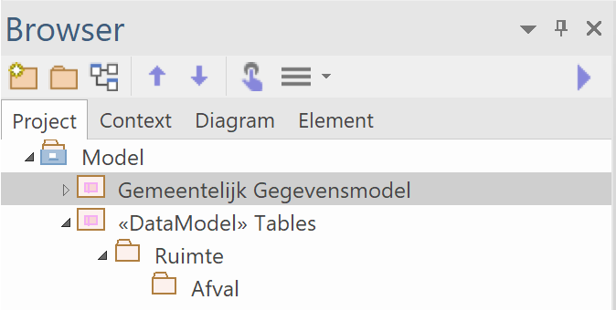
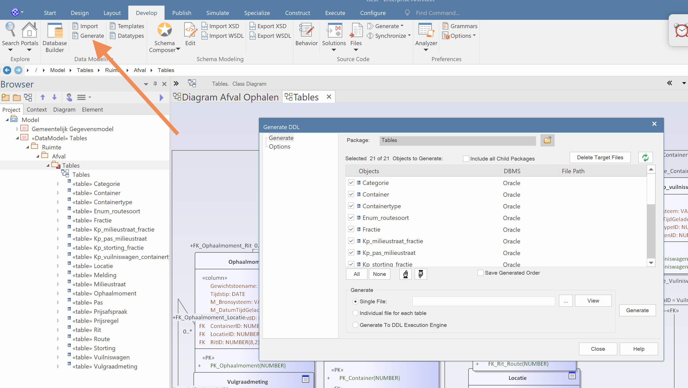
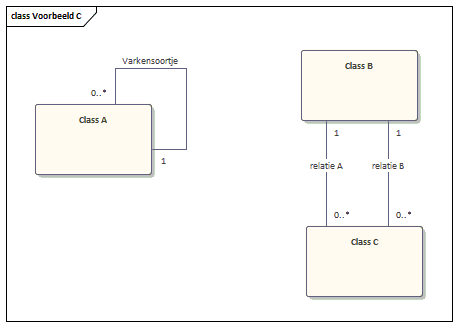

Code genereren op basis van het Gemeentelijk Gegevensmodel
Bij het GGM is een set codegeneratietemplates die binnen Enterprise Architect gebruikt kunnen worden voor het genereren van Data Definition Language (DDL). Hiermee kunnen direct tabellen in een RDMBS gegenereerd worden. Er zijn diverse templates beschikbaar waarmee tabellen voor databases gegeneerd kunnen worden, en ook programmacode voor bijvoorbeeld: Python, C# en Java. In principe werkt codegeneratie voor alle ondersteunde RDBMS'en, op wat specifieke zaken na zoals enumeraties. Deze hebben wij wel ontwikkeld voor:
- Oracle
- MySQL (ongetest)
- Wij nodigen ontwikkelaars van harte uit deze te gebruiken en verder geschikt te maken voor het GGM.
De geleverde codegeneratietemplates zijn uitbreidingen op de standaard templates van Enterprise Architect, als onderdeel van het Code Template Framework.
Installeren codegeneratietemplates
- Download het bestand 'CodegeneratieTemplates.xml'
- Start Enterprise Architect
- (Optioneel) Maak nieuw project
- Kies Import Reference Data

5. Selecteer het zojuist gedownloade bestand 'CodegeneratieTemplates.xml', selecteer alle templates en druk op Import

6. De templates zijn klaar voor gebruik en je vindt ze onder Transform

7. Succes!
Gebruiken Codegeneratietemplates
Het uitgenereren vanuit het GGM naar DDL bestaat uit twee stappen:
- Transformeren logische model naar logische tabelrepresentatie.
- Genereren van DDL uit logische tabelrepresentatie.
Voordat je begint
Zorg allereerst dat er in je project naast het GGM ook een plek is waar je de tabellen heen kunt schrijven. Hiervoor gebruiken wij een aparte node naast de root node. In het voorbeeld is dat de map <<DataModel>> Tables/Ruimte/Afval.

Zorg vervolgens dat je in Enterprise Architect het default RDBMS selecteert. Hiervoor ga je naar Preferences

Kies vervolgens onder Source Code Engineering/Code Editors de optie Default Database. In ons voorbeeld Oracle.

Stappen voor genereren DDL
Voor het genereren naar DDL neem je de volgende stappen:
1. Selecteer het onderdee van het model dat je wilt uitgenereren. In het voorbeeld de mapGemeentelijk Gegevensmodel/Ruimte/Afval/Model. je kunt ook in een diagram de gewenste objecttypen selecteren.

2. Voor de eerste stap in de generatie kies Apply Transformation

3. Selecteer aan de rechterkant van het popup Tables in het vlak Transformations. Zorg dat aan de linkerkant van de popup alle objecttypen geselecteerd zijn die uitgegenereerd moeten worden.

4. In het nieuwe popup Select Target Package selecteer de plek die je hebt gemaakt om de tabellen heen te schrijven. In ons voorbeeld <<DataModel>> Tables/Ruimte/Afval.

5. Om de eerste stap in de transformatie en generatie te starten click op Do Transform

6. Even wachten, en de eerste stap in de generatie is uitgevoerd: de tabellen in Enterprise Architect zijn aangemaakt. De eerste stap in het generatieproces is nu uitgevoerd. Er is een "logische" en RDBMS-onafhankelijke versie van de tabellen aangemaakt.

7. In de volgende stap genereer je vanuit de "logische" en RDBMS-onafhankelijke versie van de tabellen de DDL waarmee je de tabellen in je database kunt maken. Selecteer de map met de tabellen die zojuist is gegenereerd.

8. Onder Develop Datamodelling kies Generate

9. Vul een bestandsnaam en map in en druk op de knop Generate

10. Even wachten en de DDL staat klaar. Succes!
Interne werking
De mogelijkheden die de codegeneratietemplates bieden is beperkend voor de mogelijkheden bij het modelleren in het Gemeentelijk Gegevensmode. Immers datatypes en relaties die niet worden ondersteund door de codegeneratietemplates kun je niet (automatisch) omzetten naar tabellen, en niet goed gebruiken als je het tabel toepast. Daarom is hier beschreven wat je in het logisch model kunt gebruiken en hoe dit transformeert naar tabellen.
Objecttypes(Classes)
Bij het genereren van de tabelnamen geldt de volgende volgorde (alle namen worden ingekort tot maximaal 30 karakters):
- Alias
- Naam objecttype
Als de map waar het objecttype in zit een Alias heeft wordt deze als prefix voor de tabelnaam gebruikt. Daarnaast worden bij iedere tabel twee kolommen toegevoegd (bedoeld om van waarden te voorzien tijdens het vullen van het datawarehouse):
- DWH_Bronsysteem (Naam van het bronsysteem waarvandaan data is geladen)
- DWH_DatumTijdGeladen (Systeemdatum(tijd) waarop data is geladen)
- DWH_DatumTijdGeldigVanaf (Voor opbouw van historie: datum en tijd vanaf welke record geldig is)
- DWH_DatumTijdGeldigTotMet (Voor opbouw van historie: datum en tijd tot en met welke record geldig is)
Als een objecttype een Stereotype heeft dan worden deze als volgt gebruikt:
-
enumeration (Alleen Oracle en MySql): omgezet naar tabel met tabelnaam prefix _ENUM__. Tabel heeft altijd de volgende kolommen: ID, waarde en omschrijving. Daarbij worden de verschillende attributen omgezet naar INSERT-statements, zodat de tabel gevuld wordt. Hierbij worden de velden van de attributen als volgt gemapt:
- ID: Attribuutveld Alias
- waarde: Attribuutveld Name
- omschrijving: Attribuutveld Comment
-
referentielijst: tabel met tabelnaam met prefix _LST__
Attributen
Met behulp codegeneratietemplates worden de verschillende attributen van de objecttypes uit het GGM omgezet op basis van Datatype en op basis van Stereotype. Het gaat hier om aanvullingen boven het Code Template Framework van Enterprise Architect. Bij het genereren van de tabelnamen geldt de volgende volgorde:
- Alias
- Naam attribuut
Attributen worden als volgt op basis van hun datatype omgezet (niet case sensitive):
- Datumtijd of Datetime: attribuut met zowel datum als tijd (Voor Oracle DATE-veld).
- Datum of Date: attribuut met alleen datum.
- Tijd of Time: attribuut met alleen tijdstip.
- ANxxx: Tekstveld (Alphanumeriek) met lengte xxx. Als er geen lengte is weergegeven wordt teruggevallen op lengte 80. Integer of Int: numeriek veld met alleen gehele getallen.
- Double: numerieke waarden met komma
- Bedrag: veld waar bedragen in worden bewaard (bedrag met maximaal 10 cijfers, waarvan 2 achter de komma)
- Tekst of Text: tekstveld voor lange memovelden.
- Boolean: Boolean-waarde (voor Oracle numeriek veld: ‘J’=1, ‘N’=2, ‘Overig’=-1, ‘Onbekend’=null)
- GUID: Tekstveld van 40 karakters
- GML of Punt: locatie, veld wordt opgesplitst in twee velden voor WGS84-coördinaten ("veldnaam"_lat en "veldnaam"_long) en in twee velden voor rijksdriehoekcoördinaten ("veldnaam"_rdx en "veldnaam"_rdy). Alle velden zijn van het datatype double.
Attributen worden op basis van hun Stereotype omgezet:
- Adresaanduiding: veld wordt vervangen door de volgende velden: Naam Gemeente, Straatnaam, Huisnummer, Huisletter, Huisnummertoevoeging, Postcode en BAGID.
- enum: er wordt een referentie naar de enumeratie opgenomen.
Relaties
De vertalen van relaties in het logisch model is niet altijd recht-toe-rechtaan. Met name voor de naamgeving van de foreignkeys en de foreignkey-constraints. Hierom is dit hier in 3 voorbeelden beschreven.
Voorbeeld A
In het eerste voorbeeld zijn 4 objecttypes/classes te zien met drie relaties
- Relatie A: 1:N-relatie
- Relatie B: N:M-relatie
- Generalisatie van Class A t.o.v. Child Class A

Deze relaties vertalen zich na transformeren naar tabellen als volgt:
- Relaties A: kolom ClassAID in tabel ClassB met foreignkey naar tabel ClassA
- Relatie B: de koppeltabel KP_classa_classc, met foreignkey-relaties naar tabel ClassA en tabel ClassB
- Generalisatie van Class A t.o.v. Child Class A: dit blijven twee aparte tabellen, kolommen worden niet overgenomen in het child. Er wordt een reguliere 1:N-relatie gemaakt, zoals Relatie A.

Voorbeeld B
De naamgeving van de foreignkeys, foreignkey-constraints en koppeltabellen kan worden beïnvloed door het gebruik van relatienamen en aliassen. Hiermee zorg je dat er geen dubbele constraints worden gemaakt en er geen onleesbare of te lange namen ontstaan. Voor naamgeving wordt de volgende volgorde gebruikt (in volgorde van prioriteit):
- Alias van Source/Target
- Alias van relatie
- Relatienaam
- Concatenering namen Source en Target
In het voorbeeld zijn de volgende relaties uitgewerkt:
- Relatie Class A en Class B: relatienaam = "Relatienaam"
- Relatie Class C en Class D: relatie heeft Alias "Aliasnaam"
- Relatie Class E en Class F: zowel Source als Target van relatie hebben eigen alias
- Relatie Class G en Class H: relatie heeft geen naam en geen aliassen
- Relatie Class I en Class J: relatie zonder naam en aliassen, maar Source en Target omgedraaid t.o.v. het vorige voorbeeld.

Na transformeren naar tabellen als volgt:
- Eerste voorbeeld: tabel ClassA krijgt kolom ClassBID (met index) en foreignkey-constraint (met in de naam relatienaam) op de relatie met tabel ClassB.
- Tweede voorbeeld: tabel ClassC krijgt kolom ClassCID (met index) en foreignkey-constraint (met in de naam alias) op de relatie met tabel ClassC.
- Derde voorbeeld: tabel ClassE krijgt kolom AliasSourceCID (met index) en foreignkey-constraint (met in de naam de aliassen van source en target) op de relatie met tabel ClassF.
- Vierde voorbeeld: tabel ClassG krijgt kolom ClassHID (met index) en foreignkey-constraint (met in de namen van de tabellen) op de relatie met tabel ClassH.
- Vijfde voorbeeld: tabel ClassI krijgt kolom ClassJID (met index) en foreignkey-constraint (met in de namen van de tabellen) op de relatie met tabel ClassJ (zelfde als 4e voorbeeld).

Voorbeeld C
Als laatste een voorbeeld met wat voorbeelden die speciale aandacht nodig hebben, omdat het transformatieproces anders fouten oplevert:
- Relaties met jezelf ;) (Varkensoortje)
- Meervoudige relaties tussen objecttypes.

Om deze in het transformatieproces goed te laten werken moet een een Alias opvoeren bij de Source van de betreffende relatie. In het voorbeeld getoond voor het varkensoortje. Deze kun je ook voor meervoudige relaties gebruiken.

Als je het logisch model hebt getransformeerd naar tabellen zie je dat de Aliasnaam wordt gebruikt voor de foreignkeys en de foreignkey-constraints. Zo kun je zorgen dat er unieke namen worden gebruikt.